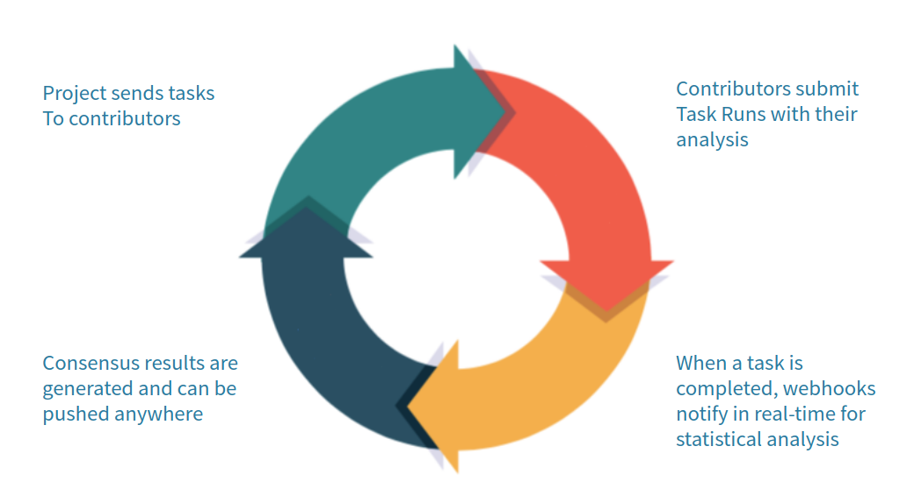

Introduction¶
PYBOSSA has two main components:
- the server and
- the projects.
Professional PYBOSSA projects.
If you want to build a project, you can hire Scifabric for designing, building, and analysing your data. Check Scifabric solutions.
The server¶
The PYBOSSA server is a web server with a RESTful API that distributes tasks among volunteers using a simple API.
For using this guide, you can try the PYBOSSA technology using our Scifabric’s free PYBOSSA server CrowdCrafting.org. You can start directly using this service without any cost, or if you prefer you can [hire one of our PYBOSSA server options] (https://scifabric.com/pricing/).
Architecture¶
The following diagram gives you an overview of how a PYBOSSA system works:

A PYBOSSA server can have one or more projects. A project can have one or more tasks, and PYBOSSA takes care of distributing the tasks among the volunteers.
This distribution happens when a volunteer requests a task. PYBOSSA checks which available tasks can be sent to the user, and sends them. When the volunteer sends a task run (a classification, transcription, analysis, etc.) PYBOSSA saves it.
PYBOSSA supports real-time data analysis. If the project has this feature enabled, PYBOSSA will notify, using a webhook POST, a microservice to do the statistical analysis and save a result for the given task based on the task runs of the task.
The Project¶
A PYBOSSA project is an HTML page with some JavaScript that will load a task from a PYBOSSA server and present it to the volunteer and ask the user to, for instance, classify an image or transcribe a handwritten document.
A PYBOSSA project has two main components:
- The Task Presenter: an HTML document where the JavaScript will load the task data into the DOM; and
- The Task Importer: usually a script that will upload the tasks for the project into the PYBOSSA server.
Projects can be easily created using two approaches:
- Using the Web interface: where you can create a project, write the Task Presenter and upload the tasks using the simplified built-in Task Importers (get tasks from Flickr, Amazon S3, Dropbox, Youtube, Twitter, CSV, Google Spreadsheets a IIIF manifest); or
- Using the API: where you will be able to create the project, write the Task Presenter. For importing the tasks, you can use the Task Importer of your project, use our command line tool, or if you prefer it to create a specific script that will use the PYBOSSA API for this part using your preferred programming language.
The Web Interface is an excellent start point to learn a bit more about the PYBOSSA architecture and how you can develop a simple project in a short time, while the API will give you more options regarding flexibility.
Adding tasks to a project¶
Creating a project is simple. You fill in some data via the web interface, and the project is created. Once you have it, you will need to add tasks to them. To do it, you could use one of the available PYBOSSA importers:
- Amazon S3: to import images, videos, audios or PDFs.
- Twitter: to import tweets from a hashtag, user handle or search.
- Youtube: to import videos.
- Google Spreadsheets: to import spreadsheets.
- CSV: to import spreadsheets.
- EpiCollect+: to import form data from mobile phones with geolocalized information like images.
- Dropbox: to import pictures, videos, audios or PDFs.
- Flickr: to import pictures.
- IIIF manifests: to import images (and in future, video or audio).
Tip
If you need an importer, please, add a Github Issue in our repository so we can implement it.
While these importers solve most of the problems, in some scenarios you will need to import data into your PYBOSSA project in a different way. For these cases, we recommend you to use our command line tool pbs or just write a script that will talk directly to the PYBOSSA API.
Scifabric provides several PYBOSSA project templates that can be re-used for creating new projects easily:
- Flickr Person Finder: an image classification template,
- Urban Parks: a geo-localizing using web-maps template,
- PDF Transcribe: a transcription template.
The templates provide the following tools:
- Task Creator: check in the repository the createTasks.py script (deprecated as we use now pbs),
- Task Presenter: check in the repository the template.html file,
- Tutorial: check in the repository the tutorial.html file,
- Project description: check in the repository the project.json and long_description.md files.
We recommend you to read the tutorial as it gives a step by step guide about how you can create a project, write a script to import tasks, create the Task Presenter using the Flickr Person Finder template.
Asking the crowd to participate¶
Once we have the data in place, we would need to show it to the volunteers. We will achieve it by using the task presenter.
As PYBOSSA runs mostly on the web (you can build native iOS or Android apps as well), a task presenter is usually an HTML page where we will load the task. For example, if we are classifying an image, we will insert the picture along with a form where the user can submit the response (the Task Presenter would also take care of sending that response back to the PYBOSSA server via an API call).
Task Presenters can be written in any language and run anywhere as long as they can communicate with the PYBOSSA server via its API. PYBOSSA has a headless solution where developers can build native iOS and Android apps for interacting with PYBOSSA as well as Single Page Applications using popular Javascript frameworks.
Scifabric provides several template projects that can be re-used to create your project:
- Flickr Person Finder: an image classification template,
- Urban Parks: a geo-localizing using web-maps template,
- PDF Transcribe: a transcription template.
The template projects provide the task presenter, where you can learn how to use it. We recommend you to read the tutorial as it gives a step by step guide about how you can create a project, write the Task Creator and Presenter from scratch using the Flickr Person Finder template project.